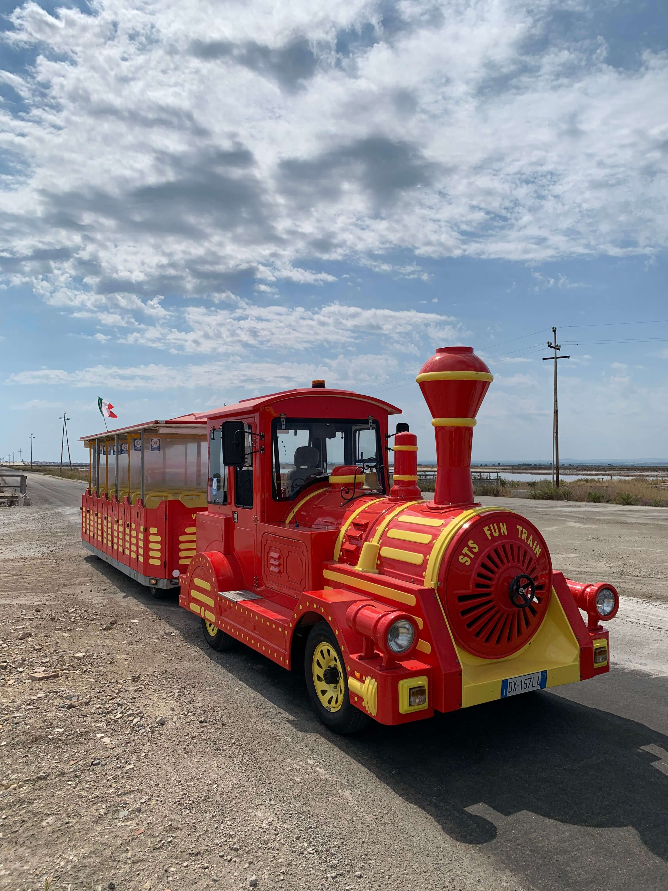

Esplora la Città con il Nostro Servizio di Noleggio Trenini Turistici
Benvenuti nell'affascinante mondo dei trenini turistici, offerto dalla nostra azienda di guida turistica! Se state cercando un modo unico e divertente per scoprire i tesori nascosti e le meraviglie della nostra città, siete nel posto giusto.
Cosa Offriamo:
- Tour Guidati: I nostri trenini turistici vi porteranno in un viaggio avvincente attraverso i luoghi più iconici e le attrazioni nascoste della città. Un esperto guida turistica vi accompagnerà durante il tour, fornendovi informazioni interessanti e storie affascinanti.
- Esperienza Personalizzata: Possiamo personalizzare il vostro tour in base alle vostre preferenze. Che desideriate esplorare la storia, l'arte, la gastronomia o altro, possiamo adattare il percorso alle vostre esigenze.
- Divertimento per Tutta la Famiglia: I nostri trenini turistici sono progettati per coinvolgere tutte le età. Che siate una famiglia in vacanza o un gruppo di amici, il divertimento è garantito.
- Comodità e Relax: Siedetevi, rilassatevi e godetevi il viaggio. I nostri trenini sono dotati di comfort e offrono una vista panoramica della città.
Perché Sceglierci:
- Esperti Locali: Il nostro team di guide turistiche è composto da esperti locali appassionati della città e pronti a condividere le loro conoscenze con voi.
- Sicurezza e Comfort: La vostra sicurezza e il vostro comfort sono la nostra priorità. I nostri trenini sono sottoposti a regolari controlli e manutenzione.
- Esperienza Indimenticabile: Offriamo un'esperienza unica e memorabile che vi farà innamorare della città.
- Prenotazione Semplice: Prenotate il vostro tour con facilità e siamo a vostra disposizione per qualsiasi richiesta speciale.
Pronti a scoprire la nostra città in un modo unico? Pianificate il vostro tour con il nostro servizio di noleggio trenini turistici e preparatevi per un'avventura emozionante!
Contattateci oggi stesso per ulteriori informazioni e prenotazioni. Siamo pronti a farvi vivere un'esperienza indimenticabile.